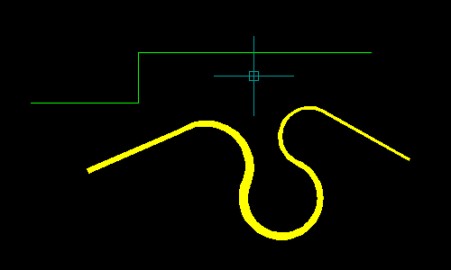

Add Polyline Vertex
This page is delivered for consistency purposes only, as part of the LeeMac sample module of DynALisp, which shows how DynALisp turns existing AutoLISP programs into a module. The program and its description are the work of Lee Mac, who keeps all the credit for them. The original page, with the latest version, is on Lee Mac's website: https://lee-mac.com/addpolyvertex.html
| Function Syntax | LM-AddPolylineVertex – original syntax: apv (see aliases) |
| Current Version | 1.1 |
| Compatible with AutoCAD for Mac? | No |
| Compatible with AutoCAD LT? | Yes |
| Original Page | lee-mac.com/addpolyvertex.html |
Program Description
This program allows the user to add a new vertex to a 2D polyline (LWPolyline) object.
The program has a single prompt for the user to specify the location of the new vertex along the polyline. This prompt combines the specification of the location of the new vertex with the selection of the polyline to be modified; as such, the location for the new vertex must reside on the polyline that is to be modified.
The program is compatible for use with 2D (LW)polylines in any orientation or plane, with varying or constant width, and with straight or arc segments - or a combination of all of these properties.
Although this functionality is now present in the grip menus available in AutoCAD 2012 and later versions, I hope that this program will benefit those who aren't lucky enough to have access to the latest software.
Example of Usage

Bundled program notes
;;---------------------=={ Add LWPolyline Vertex }==--------------------;;
;; ;;
;; Adds a new vertex to an LWPolyline at a point specified by the ;;
;; user; compatible with LWPolylines at any orientation, with varying ;;
;; width and arc segments. ;;
;;----------------------------------------------------------------------;;
;; Author: Lee Mac, Copyright © 2012 - www.lee-mac.com ;;
;;----------------------------------------------------------------------;;
;; Version 1.0 - 2012-12-17 ;;
;; ;;
;; - First release. ;;
;;----------------------------------------------------------------------;;
;; Version 1.1 - 2022-08-29 ;;
;; ;;
;; - Fixed bug where adding a vertex to the final arc segment of a ;;
;; closed polyline caused the final segment to become linear. ;;
;;----------------------------------------------------------------------;;
Command Names And Aliases
As in every DynALisp module, each program of this sample module has one main command, named LM-*, and the original command names of Lee Mac's page are kept as its aliases: they run the same command, and can be added, renamed or removed in Dyl-Suite (saved in Resources\Aliases.csv).
| Command | Aliases | Name |
|---|---|---|
| LM-AddPolylineVertex | APV | Add Polyline Vertex |